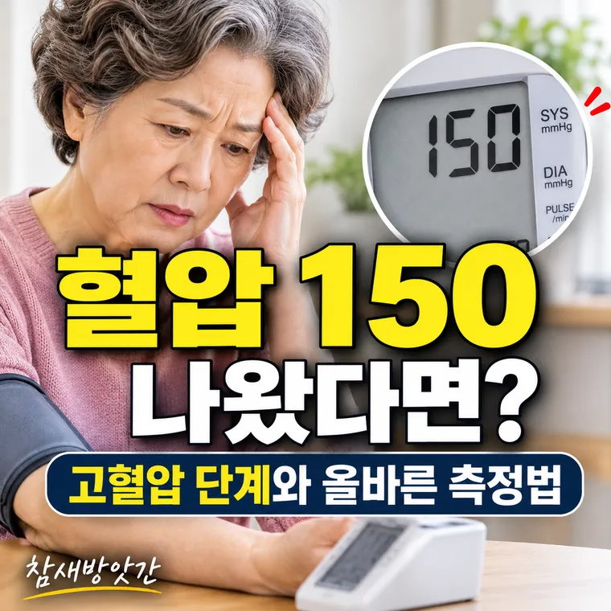

혈압 150 나왔다면 꼭 알아야 할 고혈압 단계와 올바른 측정법
건강 검진이나 가정에서 혈압을 측정했을 때 150이라는 수치가 나오면 적지 않게 당황하게 됩니다. 숫자만 보면 높은 것 같지만 정확히 어떤 상태를 의미하는지 파악하는 것이 중요합니다.

대한고혈압학회 기준에 따르면 혈압 150은 명확한 관리와 주의가 필요한 구간에 해당합니다. 내 혈압이 정확히 어느 단계에 속하는지 객관적으로 확인하고 대처하는 방법을 알아보겠습니다.
대한고혈압학회 기준 고혈압 단계별 수치
혈압 수치는 수축기 혈압(위쪽)과 이완기 혈압(아래쪽)을 동시에 고려해 판단해야 합니다. 정확한 분류 기준을 알면 현재 건강 상태를 가늠하는 데 도움이 됩니다.
수치로 보는 혈압 단계 구분
대한고혈압학회에서는 혈압 상태를 정상부터 2기 고혈압까지 세분화하여 관리하도록 권장합니다. 정상혈압은 수축기 120 미만이고 이완기 80 미만인 상태를 말합니다.
수축기가 120에서 129 사이이고 이완기가 80 미만이라면 주의혈압으로 분류되며, 수축기 130~139이거나 이완기 80~89 사이라면 고혈압 전단계로 봅니다.
혈압 150 수치는 이보다 높은 1기 고혈압 구간에 해당합니다.
| 단계 | 수축기(위) | 이완기(아래) |
|---|---|---|
| 정상혈압 | 120 미만 | 그리고 80 미만 |
| 주의혈압 | 120~129 | 그리고 80 미만 |
| 고혈압 전단계 | 130~139 | 또는 80~89 |
| 1기 고혈압 | 140~159 | 또는 90~99 |
| 2기 고혈압 | 160 이상 | 또는 100 이상 |
"또는" 기준으로 판단하는 핵심 원칙
혈압 단계를 나눌 때 가장 중요한 원칙은 바로 "또는"이라는 조건입니다. 수축기와 이완기 중 단 하나만 높은 구간에 해당해도 해당 단계로 분류됩니다.
예를 들어 수축기가 150이 나오고 이완기가 80이더라도 수축기 수치 기준에 따라 1기 고혈압으로 판단합니다.
두 가지 수치가 서로 다른 단계에 걸쳐 있다면 더 높은 단계를 기준으로 현재 상태를 파악해야 합니다.
진료실 혈압과 가정혈압의 차이와 측정 시간
병원 진료실에서 재는 혈압과 집에서 직접 재는 가정혈압은 기준 수치와 측정 환경이 다릅니다. 정확한 상태 파악을 위해서는 가정혈압의 기준을 이해해야 합니다.
가정혈압 측정 기준과 진료실의 차이
가정혈압은 병원 환경에서 느끼는 긴장감이 적기 때문에 진료실 혈압보다 조금 더 낮게 잡힙니다. 가정혈압 기준으로는 135/85 mmHg 이상일 때 고혈압으로 의심합니다.
따라서 집에서 잰 혈압이 150이라면 가정혈압 기준으로도 분명한 주의 구간을 넘은 상태입니다. 평소 집에서 꾸준히 기록을 남겨두는 것이 진료 상담에도 큰 도움이 됩니다.
정확한 혈압측정시간과 방법
혈압은 하루 중에도 시간대에 따라 수치가 계속 변하므로 정해진 시간에 바르게 측정해야 합니다. 아침에는 기상 후 1시간 이내에, 화장실에 다녀와 소변을 본 후 측정하는 것이 좋습니다.
저녁에는 잠자리에 들기 전 안정을 취한 상태에서 재야 합니다.
측정 전에는 최소 5분 동안 의자에 편안하게 앉아 안정을 취하고, 1~2분 간격을 두고 두 번 측정하여 평균값을 기록해야 정확합니다.
· 측정 30분 전에는 커피와 담배, 운동을 피한다
· 등받이 의자에 기대어 앉아 5분 안정, 다리는 꼬지 않는다
· 커프는 위팔 심장 높이에, 측정 중에는 말하지 않는다
· 1~2분 간격으로 두 번 재서 평균을 적는다
단발성 수치에 흔들리지 않는 올바른 태도
한 번 높게 나왔다고 해서 곧바로 질환으로 확정하지는 않습니다. 정확한 판단을 위해서는 꾸준한 기록과 전문가의 진단이 필수적입니다.
단 한 번의 측정으로 진단하지 않는 이유
혈압은 스트레스, 카페인, 신체 활동, 피로도에 따라 시시각각 변합니다. 단 하루 혈압이 150으로 높게 나왔다고 해서 곧바로 고혈압 환자로 단정 짓지 않습니다.
반드시 다른 날에 여유를 두고 2회 이상 재어본 뒤 평균 수치를 바탕으로 판단해야 합니다.
진단과 치료는 전문가의 영역
스스로 혈압 수치를 확인하고 관리하는 것은 중요하지만, 임의로 판단하는 것은 금물입니다.
약을 줄이거나 끊는 행위는 절대 해서는 안 되며, 정확한 진단과 약물 처방은 반드시 의사의 영역임을 기억해야 합니다.
수치가 높게 지속된다면 관련 병원을 방문해 정확한 상담을 받아보시기 바랍니다.
자주 묻는 질문
Q1. 혈압이 150 나오면 무조건 약을 먹어야 하나요?
단 한 번 혈압이 150으로 측정되었다고 해서 바로 약을 복용하지 않습니다. 날짜를 달리하여 여러 번 측정하고 평균을 낸 뒤 의사의 진단에 따라 결정됩니다.
Q2. 가정혈압 측정할 때 올바른 자세가 무엇인가요?
등받이가 있는 의자에 편안하게 앉아 커프를 심장 높이에 맞춘 뒤 5분간 안정을 취하고 측정합니다. 측정 중에는 말을 하거나 몸을 움직이지 않아야 합니다.
Q3. 혈압 150 수치는 위험한 수준인가요?
대한고혈압학회 기준으로 1기 고혈압에 해당하며 주의가 필요한 수치입니다. 즉각적인 위험 상황은 아니지만 꾸준한 관찰과 생활습관 개선이 필요합니다.
이 글의 설명은 2026년 11월 기준 대한고혈압학회 분류를 따랐습니다. 지침이 바뀌면 숫자가 달라질 수 있으니 참고용으로만 읽고, 몸이 걱정되면 의료진과 상담하세요. 진단과 약은 의사의 영역입니다.